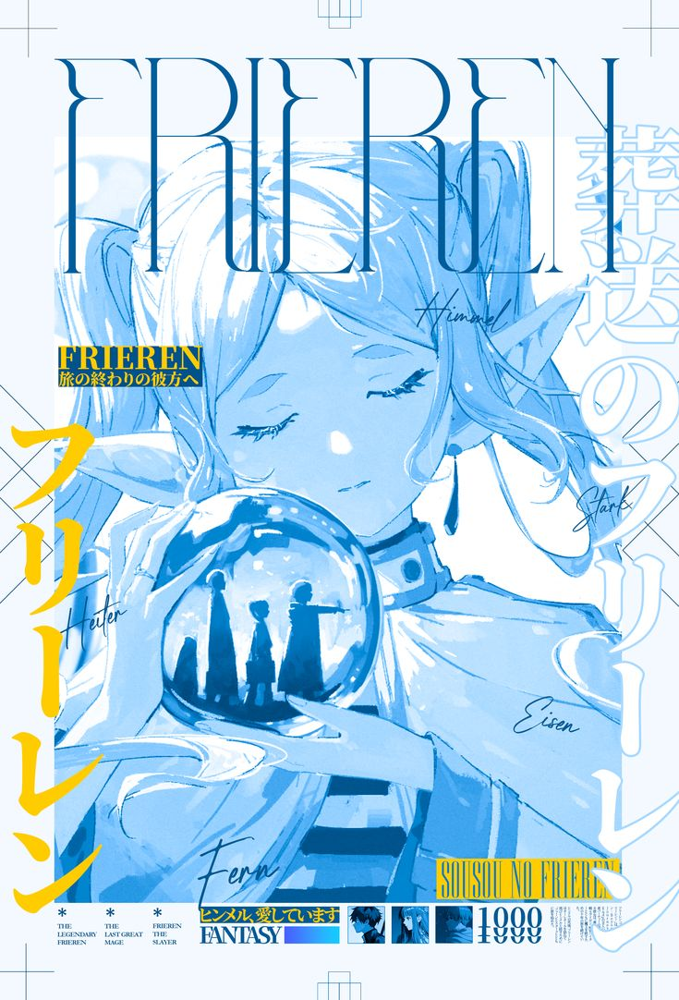

Frieren
Thể loại: Đời thường, Tâm lý, Fantasy
Mô tả:
Frieren là một bộ fantasy – đời thường – tâm lý kể về hậu hành trình anh hùng, nơi chiến thắng đã qua nhưng cảm xúc thì vẫn còn dang dở. Tác phẩm tập trung vào thời gian, ký ức và sự khác biệt trong cách con người và các chủng tộc nhìn nhận cuộc sống. Không ồn ào, không cao trào liên tục, Frieren chạm vào người xem bằng sự lắng đọng và tinh tế.
Tóm tắt cốt truyện:
Frieren là một pháp sư elf từng đồng hành cùng nhóm anh hùng đánh bại Ma Vương. Với tuổi thọ rất dài, mười năm phiêu lưu đối với cô chỉ như một khoảnh khắc ngắn ngủi. Sau khi chia tay đồng đội, Frieren tiếp tục cuộc sống của mình mà không nghĩ nhiều về quá khứ. Nhiều năm sau, khi gặp lại những người từng sát cánh và chứng kiến sự thay đổi của họ theo thời gian, Frieren bắt đầu nhận ra rằng mình đã không thật sự hiểu con người — những cảm xúc, những khoảnh khắc nhỏ bé nhưng quý giá. Từ đó, Frieren bước vào một hành trình mới, không phải để chiến đấu, mà để hiểu rõ hơn về con người, về ký ức của đồng đội và về chính bản thân mình. Mỗi cuộc gặp gỡ trên đường đi đều là một mảnh ghép giúp cô học cách trân trọng hiện tại.
Bình luận
Vui lòng đăng nhập để bình luận.